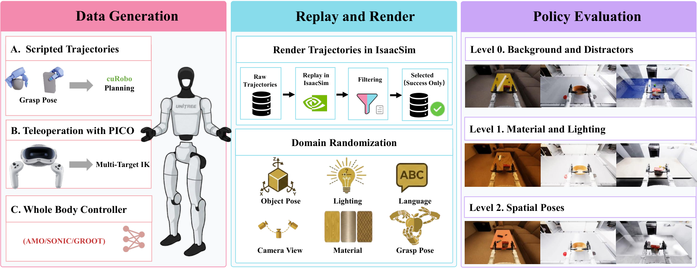

SIMPLE
给人形全身任务做仿真评测，先要交代动作接口切在哪里、成功由哪条几何判据说了算。
SIMPLE: Simulation-Based Policy Learning and Evaluation for Humanoid Loco-manipulation
六项任务三档随机化、每格十次试验，Ψ0 与 ACT 靠前，GR00T N1.6 在移动取放上六格全零；真机只补测两项。
01这篇要解决什么？
这篇不提出更强的人形策略，它提出的是一套让不同策略能被摆在一起比的条件。对 Agent 研究者，它回答的是被调用的那条全身策略究竟在什么接口上被测过：哪几维由它输出，哪几维由控制器接管，成功按哪条阈值判。
02先看一个场景
两篇论文都说自己的人形策略能把杯子从高架搬到低架。一篇在真机上跑了十次，一篇在自建仿真里跑了一百次；一篇的策略自己出腿部关节，一篇只出一个底盘速度指令，腿由现成控制器走。把两个数字并排放进一张表，比的其实不是策略。
03方法怎样运转？

- 01
物理与渲染分给两个仿真器
MuJoCo 按 500 Hz 跑刚体动力学与接触求解，每步把机器人和物体状态同步给 Isaac Sim，后者按 50 Hz 做光线追踪渲染出 RGB 观测。整个循环包在 Gymnasium 接口里，每步之后由 Task 给出奖励与终止信号。两个仿真器与场景物体资产都是现成件。
- 02
资产与任务在离线阶段一次备好
Objaverse 与 GraspNet-1B 的网格先做 CoACD 凸分解生成碰撞几何，再丢进仿真确定稳定放置姿态，另一路转成带贴图的 USD 给 Isaac Sim；BoDex 据此离线合成抓取位姿并缓存。六十项任务铺在 50 个 HSSD 场景上，评测时不做在线合成。
- 03
两条采数据的通路，腿都不归操作者直接管
自动通路由 CuRobo 出双臂轨迹，脚本化下肢策略配合底盘移动；VR 通路改用 MuJoCo 把第一人称立体视频推给 PICO 头显，操作者手部经逆运动学映到上半身，平衡与行走由 AMO 或 SONIC 按摇杆自行处理。演示按 50 Hz 录成 LeRobot 格式。
- 04
控制权按三十六维动作向量切开
策略输出 36 维：32 维上半身目标，含双手 14、双臂 14、腰部三轴与底盘高度，加 4 维运动指令 vx、vy、vyaw、qyaw；腿部关节不在其中。AMO 用一条 RL 策略出 15 个下肢关节目标，SONIC 走整体跟踪，两者都以 500 Hz 给 G1 发关节命令。
- 05
评测按三档随机化跑，成功是一条几何判据
DRManager 在每次 reset 时跑场景、目标与干扰物、空间、光照与材质随机化。成功由任务自带的 check_success 判定，都是几何阈值：抬离桌面 5 cm、放进容器、开门角度或推动距离过阈。每格十次记成 x/10，没有分阶段进度分，失衡如何计分论文没有给出。
env = gym.make("G1WholebodyXMovePickTeleop-v0", render_model="mujoco_isaacsim")
# MuJoCo 500 Hz 物理 -> 同步状态 -> Isaac Sim 50 Hz 光追渲染
obs, info = env.reset() # DRManager 按档位跑场景/材质/光照/空间随机化
while not (terminated or truncated):
a = agent.get_action(obs, info, instruction) # 远程策略服务：公开检查点 + 作者微调
# a 共 36 维 = 上半身目标 32(双手14 + 双臂14 + 腰3 + 底盘高1) + 运动指令 4
upper, nav = a[:32], a[32:] # nav = vx, vy, vyaw, qyaw
wbc.apply_action(upper, nav) # AMO 或 SONIC：腿部关节由它出，500 Hz
obs, info, truncated, terminated = env.step(a)
ok = task.check_success() # 几何阈值：抬离 5 cm / 放进容器 / 角度或距离过阈
# 十次试验记成 x/10；没有分阶段进度分，失衡如何计分论文没有给出方法与结果的原文定位见本页引用。
04跟着这个场景走一遍
教学推演：回到上面的场景。第一步，这两条策略要在 SIMPLE 里比，先得进同一个环境：MuJoCo 按 500 Hz 算接触与平衡，Isaac Sim 按 50 Hz 渲出画面，观测与终止信号都从 Gymnasium 接口出来，谁也不能私下改物理。第二步，杯子、货架与房间都来自离线备好的资产——网格先做凸分解生成碰撞几何，落一遍确定稳定姿态，抓取位姿由 BoDex 提前合成并缓存，评测时不再现场算。第三步，演示怎么来决定了策略学到什么：自动通路由 CuRobo 出双臂轨迹、脚本管底盘，VR 通路让操作者只管上半身，平衡与迈步交给 AMO 或 SONIC，两条通路的腿都不是操作者一根根摆出来的。第四步，接口把控制权切开：策略交出的 36 维里，32 维是上半身目标，4 维是底盘速度与偏航，腿部关节自始至终在控制器手上，所以两条策略即使一强一弱，比的也只是这 36 维里的差别。第五步，评分是一条几何判据，抬离桌面 5 厘米、放进容器、开门角度过阈值，十次试验记成一个计数。这里要停一下：这套协议没有分阶段进度分，看不出失败发生在哪一步；摔倒与失去平衡怎么计，论文没有给出；§3.5 把三档随机化编号成 1 到 3，表 1 与附录却写成 0 到 2；仿真与真机相关的说法靠的是与已发表工作的排名对照，不是同一套任务同一套协议跑出来的。
05实验到底表现怎样？
表 1 选六项代表任务、九条基线，每格按三档随机化报十次试验的成功计数；表 2 比三种采集通路的吞吐；表 3 与表 4 是 Ψ0 的数据配比与数据来源消融；表 5 是两项任务的零样本仿真到真机。
作者报告的实验结果 · v1
| 表 1 · 六项任务（三档随机化，各 10 次） | XMovePick | Handover | Mobile P&P |
|---|---|---|---|
| Ψ0 | 10 / 10 / 6 | 7 / 7 / 10 | 7 / 5 / 6 |
| DreamZero | 10 / 10 / 10 | 7 / 8 / 9 | 5 / 3 / 3 |
| π₀.₅ | 7 / 5 / 1 | 5 / 4 / 5 | 3 / 3 / 3 |
| GR00T N1.6 | 10 / 10 / 7 | 1 / 3 / 3 | 0 / 0 / 0 |
| ACT | 10 / 10 / 5 | 7 / 7 / 10 | 5 / 5 / 5 |
原始证据：系统架构与评测协议：§3.1、§3.5 ↗ · 基线结果：表 1 ↗ · 任务与成功判据：表 6 ↗ · 全身控制器：附录 5.4 ↗
同一条基线在不同任务上的落差远大于三档随机化带来的落差：GR00T N1.6 在 XMovePick 上是 10/10/7，在移动取放上六格全零。表 1 是六项任务的截面，不能压成一个人形策略成功率；附录表 7 里 OpenFaucet 只有 3–4/10，难度梯度是真的。
06收益来自哪里，又停在哪里？
消融与机制证据
表 3 把 Ψ0 的训练数据换成 5 份 Level 0 加 5 份 Level 1，最难那档评测从 0.50 升到 0.80；把 XmoveBendPick 的遥操作演示从 10 条加到 100 条，三档到 1.00、0.90、0.90。表 4 里遥操作数据均分 7.56，运动规划 5.00。
结论的适用边界
模型来源要分三层看。仿真器、场景与物体资产、CuRobo、BoDex、CoACD 都是现成件；两条下肢控制器 AMO 与 SONIC 也是已发表的现成方法，作者只是把它们接进来。九条被评策略全部从公开检查点出发、由作者自己微调，而微调预算彼此并不相等：Ψ0 训 4 万步用 8 张 A100，GR00T N1.6 训 2 万步用 3 张，InternVLA-M1 冻住主干只训动作头，DP 与 ACT 直接从头训。所以表 1 的横向排名同时混进了策略本身与适配成本两件事。另有几处论文没有写清：§3.5 把三档随机化编号成 Level 1 至 3，表 1 与附录的 DRManager 却写成 Level 0 至 2；主文说从 GraspNet-1B 导入 53 个物体，附录写 75 个；失去平衡、摔倒或超时如何进入 check_success 没有规定；仿真与真机相关的说法靠的是与已发表工作的排名对照，不是同一套任务同一套协议。渲染只有约 4 帧每秒，物体一律按刚体建模。
07放回全书的脉络
对照 CaP-X：抽象层级与调试预算必须和成功率一起报，这里对应的是动作接口切在哪一维、以及每条基线各花了多少微调预算。
08把阅读变成一个小研究
取任意两篇人形论文，把各自的动作维度、腿由谁产生、成功判据与试验次数填进同一张表再比。
先自己回答：这项实验怎样才有解释力？
多数情况下会发现两张表比的不是同一件事。先把接口与预算对齐再谈方法收益，否则测到的是谁的控制器更强、谁的微调更充分。
- 用自己的话说出这篇改变了哪个模块。
- 画出它的输入、输出和一次失败如何被处理。
- 复述一个结果，同时说清基线、指标与实验条件。这一问不给答案，材料在第 05 节。
先自己答，再看前两问的参考答案
这篇改了哪个模块改的是评测这一层，不是又提出一条更强的人形策略。它把全身操作的评测条件固定下来：物理交给 MuJoCo、渲染交给 Isaac Sim，动作空间统一成 32 维上半身目标加 4 维运动指令，下肢关节一律交给 AMO 或 SONIC 这两条现成控制器，成功由任务自带的几何判据程序化判定，随机化分三档。它不训练控制器，也不改被评策略的架构；唯一由作者训练的，是为了填表而对九条公开检查点做的单任务微调。
输入、输出与一次失败如何被处理输入是环境每步给出的观测：Isaac Sim 渲染的 RGB 图像、32 维本体状态（双手 14、双臂 14、腰部三轴、底盘高度）与任务的自然语言指令，策略以远程服务进程的形式接收它们。输出是 36 维动作块，前 32 维是上半身关节目标，后 4 维是 vx、vy、vyaw、qyaw；它们不直接落到腿上，而是先进 AMO 或 SONIC，由下肢控制器换算成 500 Hz 的关节位置命令，同时负责平衡与迈步。失败这条通路要写清楚：环境里没有成功检测器反馈给策略，也没有重试或复位机制，check_success 只在外部统计成绩。一次抓空之后，策略拿到的仅仅是下一帧观测，纠正只能来自它自己在新观测上重新预测动作；如果机器人失去平衡，论文没有给出终止规则，也没有说这类试验如何计分。所以表 1 的数字是十次独立试验的二值计数，既没有分阶段进度，也读不出失败发生在哪一步。
给人形全身任务做仿真评测，先要交代动作接口切在哪里、成功由哪条几何判据说了算。
↗带着位置回到原文
首发日期用于时间排序；以下方法与结果对应 v1。数据为论文作者报告，本讲义没有独立复现实验。
QA就这一页提问或讨论
对某个数字、某条边界或某个推演有疑问，欢迎直接留言：讨论按页面分开，回复会保留在 XinrunXu/awesome-agentic-robotics-papers 的 Discussions 里，需要一个 GitHub 账号。